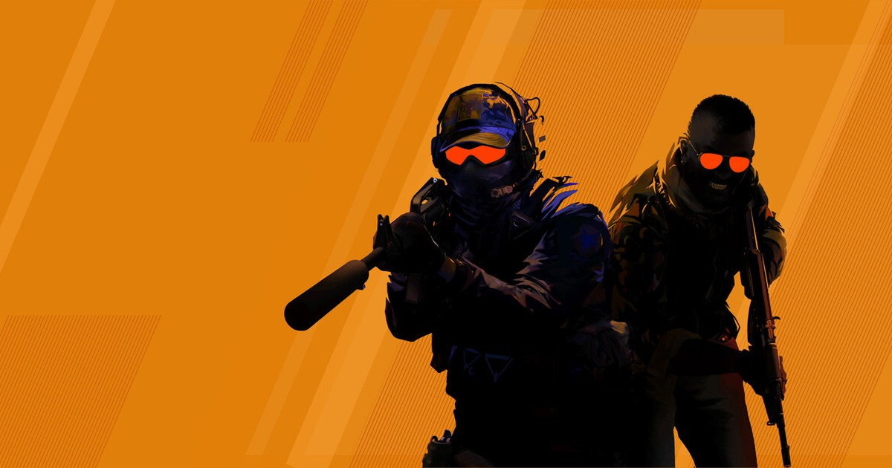

Counter-Strike 2 is heading for a ninth straight monthly player drop — and the slide is already the longest on record
Counter-Strike 2 is on pace for a ninth consecutive monthly decline in average Steam players, with the eight months already in the books marking the longest slide in SteamCharts history — and the year's final Major, which starts today in Singapore, is the obvious circuit-breaker.

Disclosure: this post contains affiliate links. I earn a commission on qualifying purchases.
Counter-Strike 2 is on pace for a ninth straight monthly drop in average players on Steam — and the eight months already in the books are the longest decline streak in SteamCharts' data, which goes back to July 2012.
The 30-day average sat at 767,092 concurrent players as of November 23, according to SteamCharts data reported by Pley.gg. That is the lowest the average has been since January 2024, when it stood at 760,859. The slide started after February, when the monthly average peaked at 1,084,095 — down 317,003 players, or 29.2%, in the nine months since.
The math on November
November is not over yet, but the arithmetic is brutal. The month-to-date average was running at about 757,000 through the morning of November 23. To finish level with October's 797,324 average, the rest of the month would need to average around 910,000 players — a level no full month has reached since June. The final November figure lands on December 1.
Independent trackers tell the same story. Explosion's tracker puts the 30-day average at 771,144 with November so far down 5% on October, and PixelKrypt has the month-to-date average at 754,893, down 5.3%. The numbers differ slightly by methodology, but every tracker agrees on the direction and the level.
This is not a GTA 6 story
It would be easy to blame the biggest launch in gaming history — and GTA 6 certainly pulled players away from everything last week, with Call of Duty's daily active users falling 42% over launch weekend. But Counter-Strike's slide started in March, eight months before GTA 6 unlocked on November 19. Every single month since February has come in lower than the one before it. This is a slow bleed, not a launch-week blip.
And for all the decline, the game is still enormous. The 30-day peak hit 1,326,695 concurrent players, and the game remains one of the busiest on Steam on any given day. The average is drifting down; the ceiling is still there.
The Major starts today
The timing is either perfect or cruel, depending on your view. The PGL Major Singapore 2026 — the sixth Counter-Strike 2 Major and the 25th Counter-Strike Major overall — opens today, November 24, and runs through December 13. Thirty-two teams are in Singapore for a $1,250,000 prize pool, with the playoffs at the Singapore Indoor Stadium from December 10 to 13 and $500,000 going to the winner. It is the first Major ever held in Southeast Asia and the second CS2 Major of the year.
Majors have always been the game's biggest shop window — the last one is the kind of event that pulls lapsed players back for a few weeks. Whether this one can do more than that, and actually bend a nine-month curve, is the question the next three weeks will answer.
One caveat on the numbers: these figures cover Steam only. Players on Perfect World's Chinese client are not included in SteamCharts' data.
Sources: CS2 player count heads for ninth straight monthly drop (Pley.gg, SteamCharts data) · Counter-Strike 2 Player Count (Explosion) · Counter-Strike 2 · PixelKrypt (PixelKrypt) · PGL Major Singapore 2026 (Wikipedia) · PGL Major Singapore 2026 (Pley.gg)
Gear up: Razer — mice, keyboards, headsets and laptops.